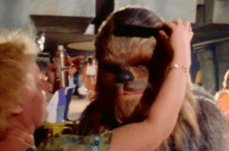

¡¡Aprende a decolorar tu cabello con estos sencillos pasos!! 👩🦳👩🦳
PASOS A SEGUIR
12.- Es importante darle cuidados posteriores a tu cabello, se recomienda que lavarlo con shampoos sin sulfatos, ni parabenos; en cuanto a los acondicionadores, se recomienda que no tengan siliconas, aunque te recomiendo que, en lugar de usar acondicionadores, utilices mascarillas, pues estas ayudan más a tu cabello a mantenerse saludable.